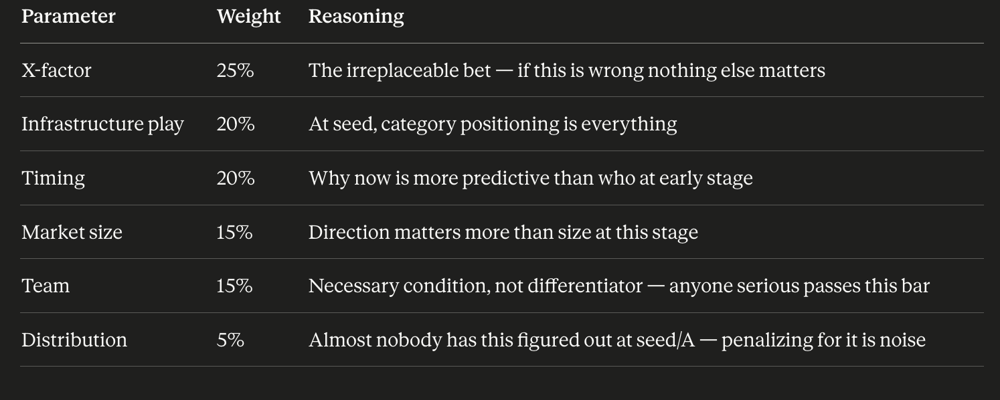
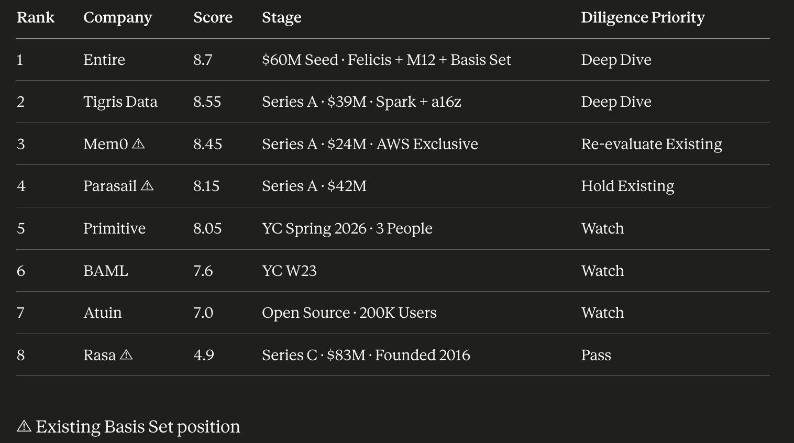
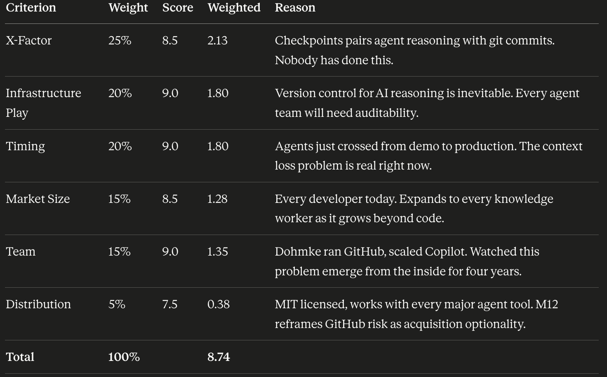
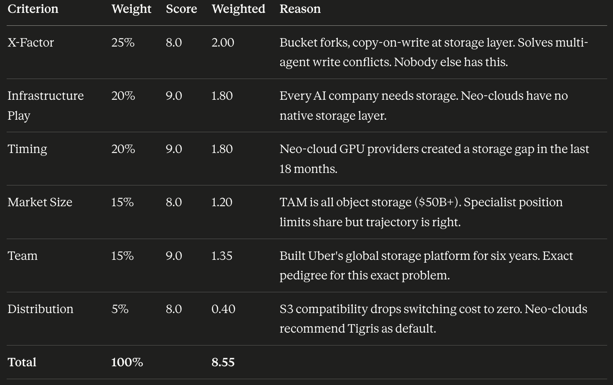
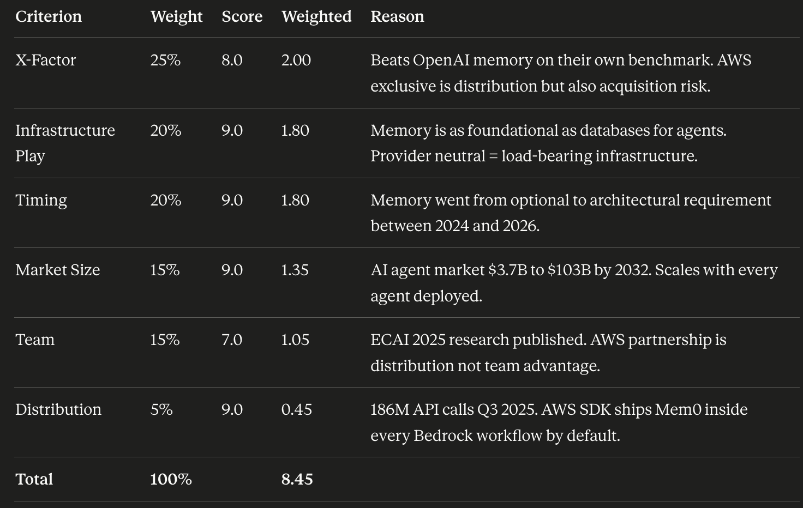
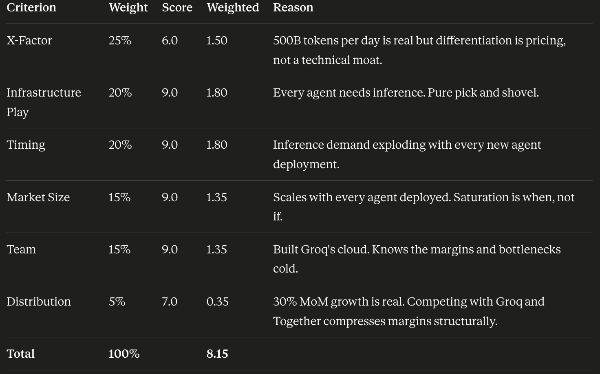
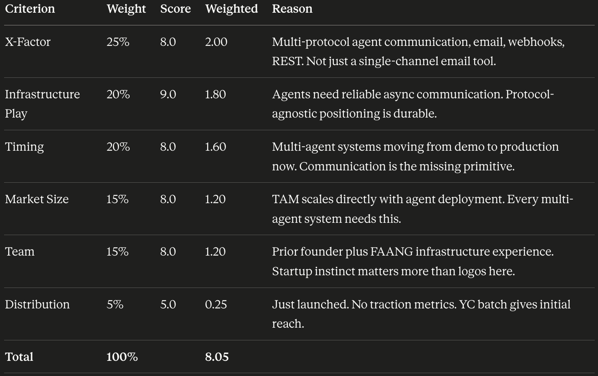
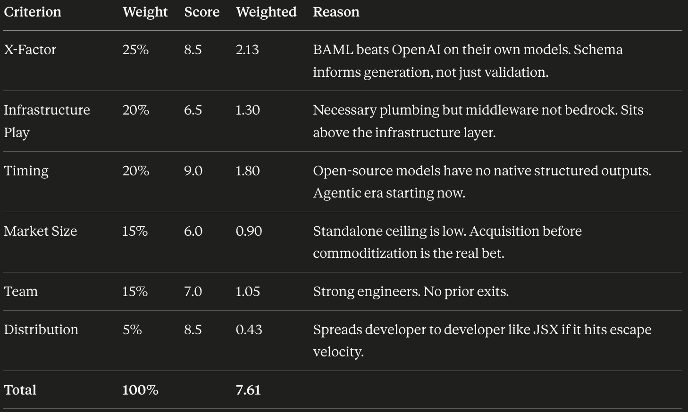
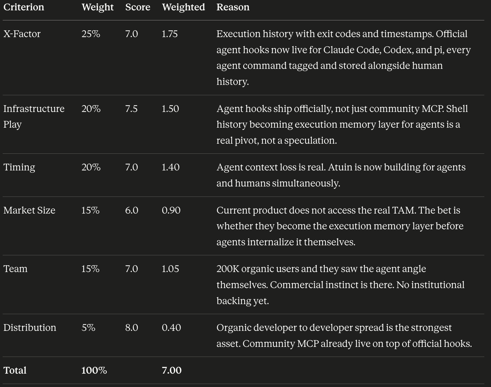
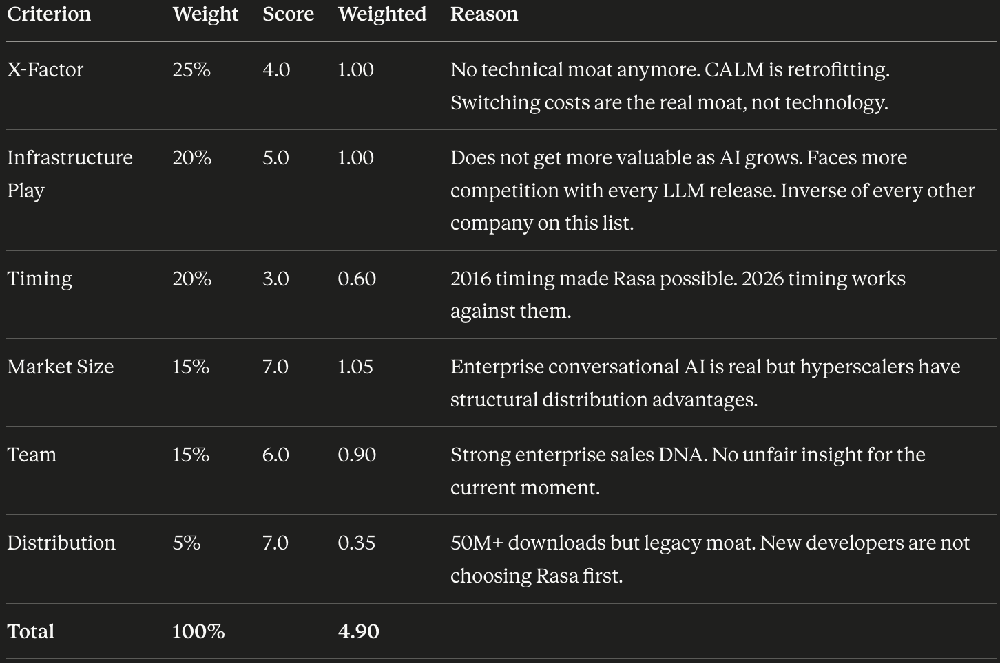

I was not looking for another "AI for X" product. Nothing wrong with those, but they saturate. I was looking for infrastructure: the kind that quietly becomes load-bearing as the ecosystem grows around it.
The analogy I kept coming back to: Pepsi and Coca-Cola did not win because they made the best drink. They won because refrigeration built a distribution network they could ride. That is what I wanted here.
The six parameters
- X-Factor: something hard to replicate. Tech, team, distribution, or network effects.
- Infrastructure play: gets more valuable as AI grows, regardless of who wins. Pick and shovel.
- Market size and direction: big enough to matter, moving the right way.
- Timing: why now, not three years ago. What changed?
- Team unfair advantage: insight or access others do not have.
- Distribution reality: how they actually reach customers. Developer tools live or die on organic sharing.
These are all seed, A, and B companies. Assessing every parameter with equal weight felt unfair, so I weighted them to reflect what actually matters at this stage.
Parameter weights
| Parameter | Weight | Reasoning |
|---|---|---|
| X-Factor | 25% | The irreplaceable bet. If this is wrong, nothing else matters. |
| Infrastructure play | 20% | At seed, category positioning is everything. |
| Timing | 20% | Why now is more predictive than who at early stage. |
| Market size | 15% | Direction matters more than size at this stage. |
| Team | 15% | Necessary condition, not differentiator. Anyone serious passes this bar. |
| Distribution | 5% | Almost nobody has this figured out at seed/A. Penalizing for it is noise. |

Rankings
| Rank | Company | Score | Stage | Priority |
|---|---|---|---|---|
| 1 | Entire | 8.7 | $60M Seed · Felicis + M12 + Basis Set | Deep Dive |
| 2 | Tigris Data | 8.55 | Series A · $39M · Spark + a16z | Deep Dive |
| 3 | Mem0 △ | 8.45 | Series A · $24M · AWS Exclusive | Re-evaluate Existing |
| 4 | Parasail △ | 8.15 | Series A · $42M | Hold Existing |
| 5 | Primitive | 8.05 | YC Spring 2026 · 3 people | Watch |
| 6 | BAML | 7.6 | YC W23 | Watch |
| 7 | Atuin | 7.0 | Open source · 200K users | Watch |
| 8 | Rasa △ | 4.9 | Series C · $83M · Founded 2016 | Pass |

Deep Dive = highest conviction, worth serious time.
Re-evaluate Existing = already in. Question is double down, hold, or prepare to exit.
Hold Existing = fine for now, no action needed.
Watch = interesting but too early or too thin to act on.
Pass = would not back fresh today.
Company breakdowns
1. Entire · 8.7
$60M seed at a $300M valuation. Thomas Dohmke, ex-GitHub CEO. M12's investment makes Microsoft the most likely acquirer, which gives a fund-returning floor even in a bear case.
The honest bear case: Microsoft ships agent reasoning checkpoints natively inside GitHub Copilot. Dohmke knows exactly where that breaks down. He ran GitHub inside Microsoft for four years and watched Copilot get built from the inside. Entire being MIT licensed and model-agnostic is not an accident. It is a deliberate wedge against that scenario.
The bet is not that Microsoft ignores this space. The bet is that Dohmke builds the open standard before Microsoft locks the door, and that M12's check makes acquisition the path of least resistance if he is right.

2. Tigris Data · 8.55
Series A, $39M, Spark + a16z, 4K+ customers. Cloudflare R2 is the obvious risk, but R2 is a CDN company that added storage. Tigris is a storage company that benchmarks 20x throughput over R2. Architectural gap, not marketing gap.
The bear case: Cloudflare closes that gap or AWS launches a neo-cloud native storage tier bundled with EC2. The reason to still back Tigris: the team built Uber's global storage platform. They will see that move coming before anyone else, and S3 compatibility means customers can leave AWS without leaving their tooling.

3. Mem0 · 8.45
Series A, $24M, AWS exclusive, 41K GitHub stars, 186M API calls. The key re-evaluation question: if AWS Bedrock ships native memory, does the exclusive partnership become a constraint rather than an asset?
Adoption inside one cloud provider is not the same as becoming load-bearing infrastructure across the ecosystem. Watch whether the next raise comes with a multi-cloud expansion clause or doubles down on AWS exclusivity. That decision answers the question.

4. Parasail · 8.15
Series A, $42M, 500B tokens per day, 30% MoM growth. X-factor at 6.0 is the honest signal. This is a brokerage play, not a fresh bet. The weighted average of 8.15 is inflated by strong infrastructure and timing scores. Frameworks average away the thing that matters most.
The structural problem is margin compression. Groq, Together, and every hyperscaler compete on the same axis. Holding an existing position is the right read. I tried to find what Parasail does that Groq does not. I cannot give you a crisp answer.

5. Primitive · 8.05
YC Spring 2026, three people, Ethan Byrd (ex-Actual AI, Microsoft, AWS, Facebook, Google). Earliest stage bet on this list. The open question: why has gRPC or Kafka not already been adapted? Those are solved protocols with massive adoption.

6. BAML · 7.6
BoundaryML, YC W23, DSL for type-safe LLM outputs. The race is adoption velocity versus provider commoditization. Anthropic, Microsoft, Databricks, and Vercel are all credible acquirers.
The bear case is straightforward: OpenAI ships a free structured outputs layer, locks developers into their ecosystem, and BAML's window closes before it reaches escape velocity. JSX was also "just middleware" until it was not. The bet is on getting acquired before the window closes.

7. Atuin · 7.0
Open source, 200K users, no disclosed VC funding. They already ship official hooks for Claude Code, Codex, and other agents. Every command an agent runs gets tagged and stored alongside human commands. They got there themselves, not through the community.
The bigger question: Atuin's value is built on humans being in the terminal. As agents increasingly own execution, the human shell history becomes less interesting and the agent execution log becomes more interesting. The founder sees this. The diligence question is whether they can outrun the thing they are trying to become.

8. Rasa · 4.9
Series C, $83M raised, founded 2016, 180 employees. The only company on this list where the infrastructure play works against them, not for them. Every other company here gets more valuable as agents proliferate. Rasa gets more exposed.
Enterprise switching costs are real. Two of the world's top three banks do not rip out conversational AI quarterly, and that is the only reason the score is not lower. But every new LLM release makes it easier to build what Rasa sells without Rasa. The question for the existing position is not whether to add. It is how long the enterprise moat holds before a hyperscaler bundles a free equivalent into their cloud contract.

The connecting thread
Eight companies, one thesis: agents broke the infrastructure stack that software runs on.
- Storage was not built for multi-agent write conflicts.
- Version control was not built to capture reasoning.
- Memory was not built to persist across sessions.
- Inference was not built for agent workload patterns.
- Communication was not built for agent-to-agent coordination.
- Structured outputs were not built to be type-safe across providers.
Every company in the top six is rebuilding one layer of that stack.